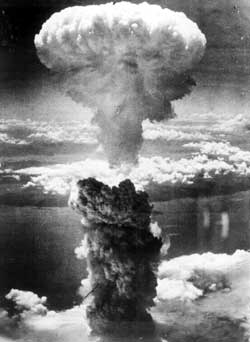

Hitler sentia a necessidade de formar a Grande Alemanha, ou seja, tomar de volta territórios que tinham traços germânicos que para ele pertenciam a Alemanha. Foi aí que ele teve a brilhante ideia no dia 1 de Setembro de 1939 de invadir a Polônia... Com inúmeras recusas da Alemanha para que ela apenas retirassem as tropas do território polonês, Inglaterra e França declaram guerra á Alemanha.
Houve, então, a formação das alianças:
Houve, então, a formação das alianças:
Países do Eixo: Alemanha, Japão e Itália.
Países Aliados: Estados Unidos, União Soviética, Inglaterra e França.
Essa guerra, para a melhor explicação, foi dividida em 3 fases:
--Expansionismo Alemão (1939 - 1941):
Rápida ofensiva nazista que chegou a dominar a não só a Polônia, como também, a Dinamarca, Noruega, Holanda e Bélgica. Seus ataques utilizavam a tática da guerra-relâmpago: bombardeavam os inimigos com a força aérea (Luftwaffe) e depois ocupavam com tanques.

--Recuperação Aliada (1942 - 1943):
Essa foi a fase mais crítica ( ou melhor ) da guerra... Os Estados Unidos não haviam motivos para que eles ainda pudessem entrar na guerra. Porém com o bombardeio da base aeronaval de Pearl Harbor, feito pelos japoneses, os Estados Unidos finalmente entraram. Foi nessa fase, também, em que a França era tomada pelos alemães.
Com a entrada definitiva dos Estados Unidos na guerra, a coisa começou a ficar ruim para os nazistas...
--Derrota do Eixo (1943 - 1945):
Houve, já no "final" da guerra, a Batalha de Stalingrado, que na nossa opinião foi a melhor e mais tensa batalha de todas, onde os soviéticos conseguiram expulsar os invasores nazistas.
Os Estados Unidos vencem os japoneses no pacífico com a bomba atômica ( foto ao lado ) e os ingleses venceram os alemães e italianos e brasileiros no Norte da África.
Outro dia bastante comemorável é o Dia D, em junho de 1944, na Normandia ( Norte da França ), no qual em uma batalha extremamente sangrenta e estratégica, os aliados conseguiram expulsar o Eixo da França.


 Documentário sobre as histórias de cinco judeus húngaros que sobreviveram ao holocausto.
Documentário sobre as histórias de cinco judeus húngaros que sobreviveram ao holocausto.